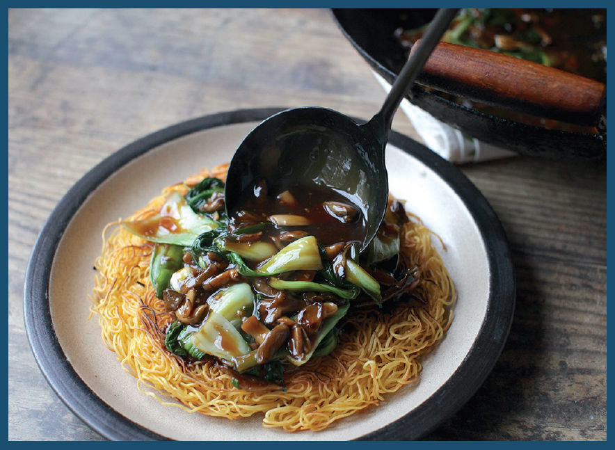

HOW TO MAKE CAKE-STYLE CRISPY CHOW MEIN (LIANG MIÀN HUANG)

“Oh hey! I just love these things! . . . Crunchy on the outside and a chewy center!”
I’m reminded of The Far Side comic with the two polar bears standing by an igloo whenever I crave crispy noodle-cake-style chow mein. The trick is in how you achieve that perfect balance.
There are several methods to cook these crispy noodle cakes. They all start with either boiling raw or dried noodles or separating store-bought par-cooked noodles to fluff them up before they go into the wok (I find that even with par-cooked noodles a quick dunk in boiling water will loosen them up and prime them for the wok).
In many restaurants, the noodles will then be deep-fried, which yields a cake that is crispy through and through. Some people may prefer this completely crispy version, but I have a strong feeling that the style was adapted more out of convenience for the cooks than for optimal eating experience. Panfrying the noodle cake in a small amount of oil takes a little more care and attention, but it results in a cake that is crispy on the outside, very gently charred in spots, but soft, tender, and chewy in the middle. Pair that with a saucy stir-fry that soaks into the crispy bits of the noodles and you’ve got a dish that positively sings with texture.
I find that it’s very important to take your time during the initial panfrying stage and not be shy with the oil. Many recipes call for as little as a couple teaspoons. In my testing, I’ve found that you need at least ¼ cup to form a really nice even layer of crispness (½ cup works even better). It may seem like a lot of oil, but you’ll see as you slide the noodle cake out of the wok that the majority of the oil doesn’t come along with it.
Taking your time with the noodles is also important. Try to cook them too fast and the noodles in direct contact with the wok surface will begin to burn before a crisp layer has had a chance to build up. I start my noodles in hot oil, then reduce the heat and let them take their time.
They may feel like they’re sticking to the wok at first. This is OK. Do not panic. If you’ve ever cooked crisp-skinned pan-roasted chicken or salmon, you know that crispy skin will tell you when it’s ready to release from the pan and that any attempt to force it will be met with resistance. Crispy noodles are exactly the same. When they’ve crisped and firmed up sufficiently, you should be able to gently loosen them from the wok so that you can start swirling—another key step for even cooking (which, incidentally, is a key step for perfect grilled cheese—keep that bread moving in the skillet!).
Once that first side is crispy and golden, I carefully slide it out onto a plate, trying to leave as much oil in the wok is possible. This allows me to invert it onto a second plate, then slide it back into the wok, a process that is much safer and more foolproof than attempting to flip it directly in the wok.
The second side cooks just like the first, with one exception: after it crisps up, I use my spatula to hold the noodles in the wok while I drain off all the excess oil, then I continue to cook the noodle cake, swirling the wok constantly, until it develops a few nice dark brown, extra-crispy parts that give it all a toasty aroma that comes through even after I top the cake with a saucy stir-fry.
When it all goes well, the dish is a textural powerhouse. Perhaps even better than igloos.